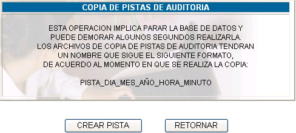
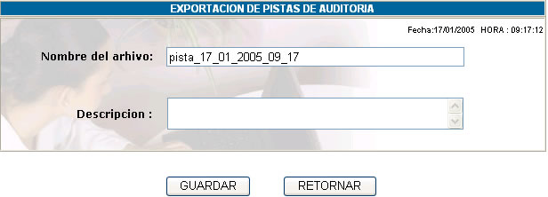

COPIA
DE PISTAS DE AUDITORIA
Al hacer click sobre esta opción usted podrá
ver la siguiente pantalla para crear una pista de auditoría.

Crear Pista; esta opción permite la creación de una nueva pista de auditoría, mediante la siguiente pantalla:

Nombre del archivo; nos indica el nombre de la pista de auditoría
a crearse. Este nombre no se puede modificar y adopta el formato: PISTA_DIA_MES_AÑO_HORA_MINUTO
Descripción; indica una descripción sobre la pista de auditoría
a crearse.